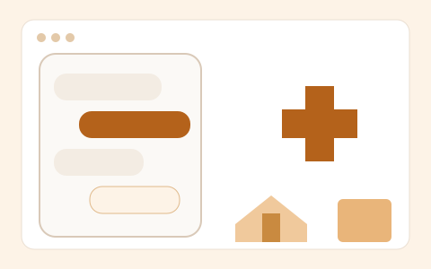

Rural Health Guide
Problem: villages often lack easy access to basic health guidance, and connectivity is poor.
What I built: a low-bandwidth symptom-guidance PWA with flows for children, adults and older adults. An Express and SQLite rule engine weighs symptoms, duration, severity and red flags, and a Scikit-learn MLP adds an early diabetes-risk signal. It supports English and Hindi, voice input, text-to-speech and offline caching.

ReactViteExpressSQLiteScikit-learnPWA